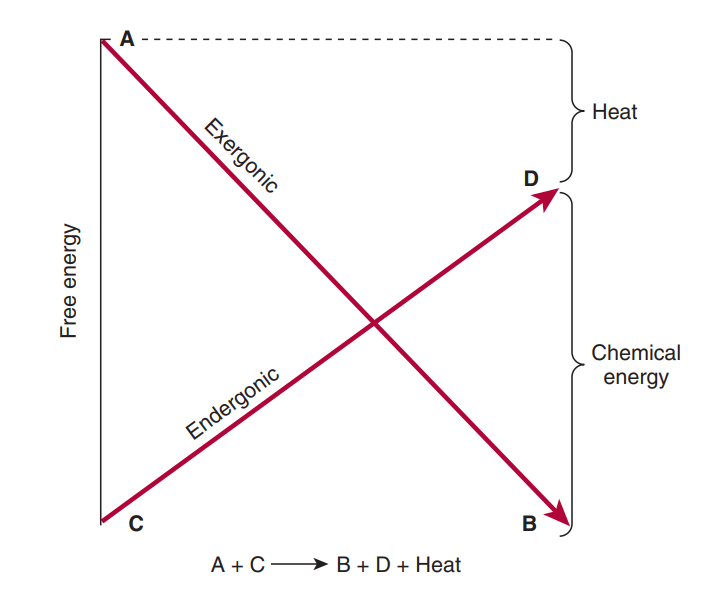
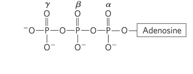
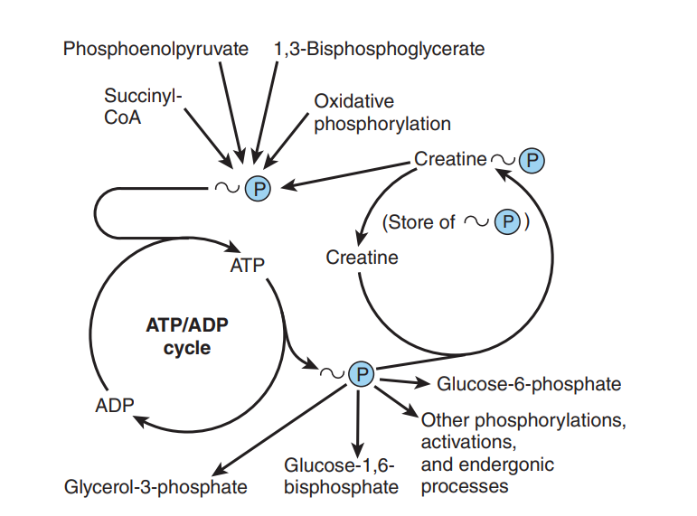
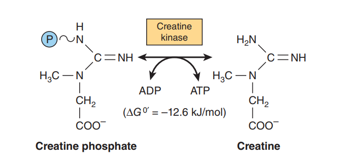
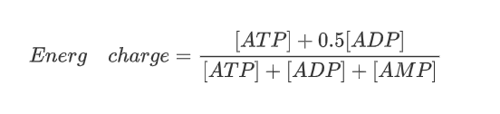
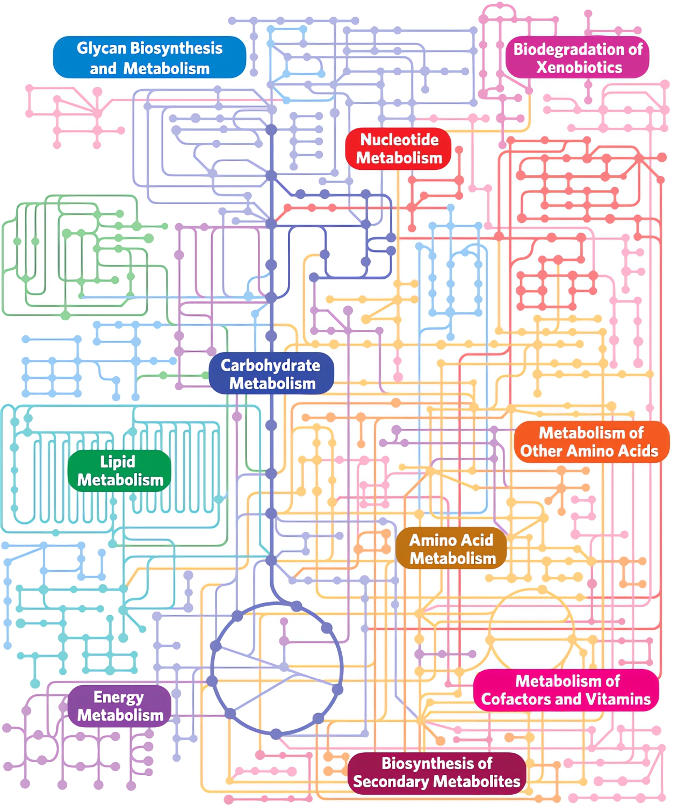

10.Metabolism and Bioenergetics
Return to IntroductionPrevious:9.Vitamin
Next:11.Biological Oxidation
10.1.Metabolism
Metabolism, refers to all the biochemical reactions that occur within living cells. Narrowly defined, metabolism refers to the organized enzyme-catalyzed reactions that take place inside cells. Broadly defined, metabolism refers to the continuous exchange of substances and energy within and outside the organism, including processes such as digestion, absorption, metabolic transformations, and excretion. All physiological phenomena of an organism, such as growth, development, reproduction, mechanical movement, thinking, and respiration, are the result of metabolic reactions. Metabolism is the most fundamental characteristic of life; where there is life, there is metabolism. When metabolism ceases, it indicates the end of life.
10.1.1.Material Metabolism and Energy Metabolism
Metabolism includes two aspects: material metabolism and energy metabolism. Material metabolism focuses on the pathways and regulatory mechanisms of various bioactive substances, such as sugars, fats, and proteins, undergoing enzyme-catalyzed reactions inside cells, including molecular breakdown and synthesis. Energy metabolism focuses on the conversion of chemical or light energy into biological energy within cells and the utilization of energy in life activities. Energy metabolism and material metabolism coexist, depend on each other, and cannot be separated.
Metabolism requires three major components: energy, reducing equivalents, and carbon skeletons. All metabolic processes rely on energy as the driving force, and within cells, adenosine triphosphate (ATP) serves as the energy carrier, while guanosine triphosphate (GTP) is involved in protein synthesis, cytidine triphosphate (CTP) participates in phospholipid synthesis, and uridine triphosphate (UTP) is involved in glycogen synthesis. Reducing equivalents are represented by nicotinamide adenine dinucleotide (NADH) and nicotinamide adenine dinucleotide phosphate (NADPH), which are synthesized during catabolism. These molecules serve as carriers of [H], which can be transferred into the respiratory chain or directly accepted by intermediate metabolites. NADPH also provides reducing power for biosynthesis. Carbon skeletons refer to the small molecular carbon frameworks that remain after the breakdown of macromolecules, such as glucose, fatty acids, amino acids, nucleotides, as well as waste products like CO2, and various intermediate metabolites including organic acids, antibiotics, and vitamins. The maintenance of metabolic processes requires the presence of all three components.
10.1.2.Assimilation and Dissimilation
Metabolism can be further divided into two aspects: assimilation and dissimilation. Assimilation refers to the process in which an organism converts substances taken from the environment into its own substances through a series of chemical reactions, involving the synthesis of large molecules from small molecules. Assimilation requires energy consumption. Dissimilation refers to the process in which substances in the organism undergo a series of chemical reactions and eventually become excreted waste products, involving the breakdown of large molecules into small molecules. Dissimilation releases energy. Material metabolism is divided into synthetic metabolism and degradative metabolism, with synthetic metabolism belonging to assimilation and degradative metabolism belonging to dissimilation. The process of substance exchange between the organism and the environment includes three stages: digestion and absorption, intermediary metabolism, and waste elimination. Nutrients absorbed by animals are utilized without distinction from the body's existing substances. On the one hand, they undergo degradative metabolism to produce energy, and on the other hand, they undergo tissue renewal and construction.
10.1.3.Nutritional Types of Organisms
Organisms in nature can be classified into several types based on their carbon source, energy source, and dependence on O2:
Photoautotrophs, photoheterotrophs, chemoautotrophs, chemoheterotrophs
Organisms can utilize either light energy or chemical energy as their energy source, referred to as photoautotrophs (plants, cyanobacteria, algae, certain photosynthetic bacteria) and chemoautotrophs (animals, most microorganisms), respectively. Photoautotrophs produce ATP through photosynthesis, while chemoautotrophs produce ATP by oxidizing reduced organic or inorganic compounds. Organisms can utilize either organic substances or CO2 as their carbon source, referred to as chemoheterotrophs and photoheterotrophs, respectively. Chemoheterotrophs mainly use various organic compounds such as sugars and lipids as their carbon sources and hydrogen donors, while photoheterotrophs mainly use CO2 as their carbon source and fix it into their own cellular carbon skeletons.
Obligate aerobes, obligate anaerobes, facultative anaerobes
Obligate aerobes can only maintain metabolism under aerobic conditions and are further divided into obligate aerobic and microaerophilic types, such as humans, most animals, and microorganisms. Obligate anaerobes can only maintain metabolism under anaerobic conditions. Obligate aerobes have a complete respiratory chain, superoxide dismutase (SOD), and catalase in their bodies. Oxygen in the body may be converted into superoxide anions (O2-), which can cause damage to biological membranes and macromolecules. Superoxide dismutase and catalase can convert toxic superoxide anions into non-toxic H2O. However, anaerobes do not contain these two enzymes, so oxygen is toxic to them. Facultative anaerobes can maintain metabolism under both aerobic and anaerobic conditions, such as Escherichia coli and yeast.
10.1.4.Characteristics of Material Metabolism
- Common metabolic pool: Whether it is external nutrients or nutrients stored in the body, they will participate in a common metabolic pool during intermediary metabolism. For example, both amino acids converted into sugars and glycerol converted into sugars can participate in the same pool of carbohydrate metabolism.
- Dynamic balance: In the body, carbohydrate metabolism, lipid metabolism, amino acid metabolism, and nucleotide metabolism are always in a dynamic equilibrium state, following cellular economy. Although various substances have multiple metabolic pathways, they can be replenished or consumed at appropriate times.
- Integrity: Material metabolism in the body is not isolated but rather a tightly interconnected, mutually convertible, and mutually constrained metabolic network. For example, sugars, fats, and amino acids all generate acetyl-CoA, which can be completely oxidized through the TCA cycle. When fatty acid catabolism is vigorous, the large amount of acetyl-CoA generated can inhibit pyruvate dehydrogenase, thus restricting the catabolism of sugars.
- Commonality of energy and reducing equivalents: ATP synthesized during catabolism can directly provide energy for anabolic metabolism, while NADPH produced can directly provide reducing power for anabolic metabolism.
- Metabolic regulation: There are various complex regulatory mechanisms within organisms, such as hormonal regulation, neural regulation, and cellular regulation, which together maintain the order and stability of metabolism.
10.1.5.Research Methods for Metabolism
Isotope Tracing Method
The isotope tracing method, also known as in vivo metabolism research, involves using isotopes, which are elements with the same atomic number and chemical properties but different masses. Radioactive isotopes of all elements can be obtained by artificial means. After adding labeled radioactive isotopes to metabolites, they participate in metabolic processes and react chemically with natural isotopes. By measuring the abundance or ratio of specific isotopes in a sample, various reaction rates, pathways, and tissue distributions in metabolic processes can be inferred.
Enzyme Inhibition Method
Enzyme inhibition, also known as ex vivo metabolism research, is used to observe the results of inhibiting a specific reaction by using enzyme inhibitors. Almost all metabolic reactions are enzyme-catalyzed. By using a certain enzyme inhibitor, the change in metabolism can be inferred.
Whole-body Level Research
Knoop used live dogs as experimental subjects, fed them different fatty acids with different numbers of carbon atoms, and analyzed their excrement to propose the β-oxidation theory of fatty acids.
Organ Level Research
In the study of urea synthesis in animals that excrete urea, when the liver was removed from the animal, the levels of amino acids and blood ammonia in the animal's blood increased while the urea content in urine decreased. The animal soon died. However, when the kidney was removed, this phenomenon did not occur. Therefore, it was concluded that the process of urea cycle occurs in the liver.
Cellular Level Research
By using differential centrifugation or density gradient centrifugation on tissue homogenates, different organelles can be separated and the enzyme systems and metabolic pathways in each organelle can be studied separately.
10.2.Bioenergetics
Bioenergetics, or biochemical thermodynamics, is the study of the energy changes accompanying biochemical reactions. Biologic systems are essentially isothermic and use chemical energy to power living processes. The way in which an animal obtains suitable fuel from its food to provide this energy is basic to the understanding of normal nutrition and metabolism.
10.2.1.Free Energy
Free energy refers to the inherent energy in a compound molecule structure, which is the energy available to do work at constant temperature and pressure. Gibbs free energy change (ΔG) is the part of the total energy change in a system that can be used to do work, known as available energy or chemical potential. Biological systems follow the general laws of thermodynamics. The first law of thermodynamics states that the total energy of a system, including its surroundings, remains constant. It means that energy is neither lost nor gained in the entire system during any process of change. However, energy can be transferred from one part of the system to another or converted into another form of energy. In biological systems, chemical energy can be converted into thermal energy, electrical energy, radiant energy, or mechanical energy.
The second law of thermodynamics states that for a process to occur spontaneously, the total entropy of the system must increase. Entropy is the degree of disorder or randomness in a system, reaching its maximum value when approaching equilibrium. Under constant temperature and pressure conditions, the relationship between the free energy change (ΔG) and the entropy change (ΔS) of a reaction system is as follows:
where ΔH is the change in enthalpy (heat) and T is the absolute temperature. In biochemical reactions, since ΔH is approximately equal to the total energy change of the reaction (ΔE), the above relationship can be expressed as follows:
If ΔG is negative, the reaction will proceed spontaneously and lose free energy, which means it releases energy. If ΔG is positive, the reaction will only occur if it can gain free energy, which means it absorbs energy. If ΔG is zero, the system is in equilibrium and no net change occurs. When the reactant concentration is 1.0mol/L, ΔG0 is the standard free energy change. For biochemical reactions, the standard state pH is 7.0. The standard free energy change at this standard state is represented by ΔG0'. The standard free energy change can be calculated from the equilibrium constant (Keq):
where R is the gas constant and T is the absolute temperature. It should be noted that the actual ΔG may be larger or smaller than ΔG0', depending on the concentrations of various reactants, including solvents, ions, and proteins. In biochemical systems, enzymes only accelerate the process towards equilibrium and never alter the final concentration of reactants at equilibrium.
10.2.2.Coupling of Energy Absorbing and Releasing Processes
Life processes, such as synthesis reactions, muscle contraction, nerve impulse conduction, and active transport, acquire energy through chemical coupling. In the simplest chemical reaction, this coupling can be represented as:

A metabolite A is converted to metabolite B, releasing free energy, and is coupled with another reaction that requires free energy to convert metabolite C to metabolite D. This process is accompanied by the loss or gain of free energy, also known as energy-absorbing and energy-releasing processes. In fact, energy-absorbing processes cannot exist independently but must be coupled with energy-releasing processes, where the overall net energy change is releasing energy. Energy-releasing reactions are called catabolism (usually the breakdown or oxidation of fuel molecules), while synthesis reactions that build substances are called anabolism. The entire reaction process in the above diagram is accompanied by a loss of free energy and is dissipated as heat.
10.2.3.High-Energy Bonds and High-Energy Phosphates
A high-energy bond refers to a chemical bond that is unstable and easily undergoes hydrolysis or group transfer while releasing more than 20.9 kJ/mol of free energy (ΔG0' < -20.9 kJ/mol). It is denoted by the symbol "~". The more free energy is released upon hydrolysis of a high-energy bond, the more unstable the bond is and the more easily it is hydrolyzed. High-energy bonds play a significant role in biological systems, with the most important ones being high-energy phosphate bonds and high-energy thioester bonds.

Compounds containing high-energy bonds are called high-energy compounds. Most of the high-energy compounds contain phosphate groups, but not all compounds containing phosphate groups are high-energy phosphates. The table below lists some standard free energy releases upon hydrolysis of phosphate compounds:
| Compound | ΔG0'(kJ/mol) |
|---|---|
| Phosphoenolpyruvate | -61.9 |
| Carbamoyl phosphate | -51.4 |
| 1,3-Bisphosphoglycerate | -49.3 |
| Creatine phosphate | -43.1 |
| ATP → AMP + PPi | -32.2 |
| ATP → ADP + Pi | -30.5 |
| Glucose-1-phosphate | -20.9 |
| PPi | -19.2 |
| Fructose-6-phosphate | -15.9 |
| Glucose-6-phosphate | -13.8 |
| Glycerol-3-phosphate | -9.2 |
Based on the characteristics of bond types, high-energy compounds can be classified into four categories:
- Phosphoester bond type: Phosphoenolpyruvate, 1,3-bisphosphoglycerate, acetyl phosphate, ATP, ADP, formyl phosphate
- Phosphoramidate bond type: Phosphocreatine, phosphoarginine
- Thioester bond type: Succinyl-CoA, acetyl-CoA
- Methylthio bond type: S-Adenosyl methionine (SAM)
10.3.ATP
Adenosine Triphosphate (ATP) is a typical high-energy phosphate compound. The ATP structure contains two high-energy phosphate bonds (β, γ), which can release 32.2 kJ/mol and 30.5 kJ/mol of energy upon hydrolysis. Hydrolysis at the γ-end generates Adenosine Diphosphate (ADP) and Adenosine Monophosphate (AMP). Therefore, ADP is also a high-energy phosphate compound. However, since the hydrolysis of the α-phosphate bond only releases 14.2 kJ/mol of energy, it is not considered a high-energy bond, and AMP is not a high-energy phosphate compound.

10.3.1.Energy Currency
ATP has a high potential for phosphate transfer, allowing it to serve as a donor of high-energy phosphates to form phosphorylated compounds. Similarly, ADP can accept a phosphate group to form ATP. The ATP/ADP cycle occurs rapidly, and the ~P involved in energy storage or capture has three main sources:

- Oxidative phosphorylation is the primary source of ~P in aerobic organisms. In the mitochondrial matrix, when oxygen is reduced to H2O through the respiratory chain, ATP is produced.
- During glycolysis, one molecule of glucose produces lactate, resulting in a net production of two ~P, generated by 1,3-diphosphoglyceric acid and phosphoenolpyruvic acid.
- In the TCA cycle, succinic acid generates one ~P under the catalysis of succinyl-CoA synthetase.
10.3.2.Energy Storer
ATP is a carrier and transporter of energy, but not a storer of energy. Phosphates are a storage form of phosphate groups, including phosphocreatine in vertebrate skeletal muscle, heart, sperm, and brain, as well as phosphoarginine in invertebrate muscle. When ATP concentration is high, creatine accepts the high-energy phosphate group from ATP under the action of enzymes to form phosphocreatine. When ATP concentration is low, phosphocreatine transfers the high-energy phosphate group to ADP. While ATP is rapidly utilized as an energy source for muscle contraction, phosphates allow the concentration of ATP and ADP to be maintained. But when the ATP/ADP ratio is high, their concentrations can increase to serve as energy reserves.

10.3.3.Energy Charge
There are three nucleotides in the cell: AMP, ADP, and ATP, collectively referred to as the nucleotide pool. In the cell, the relative quantities of ATP, ADP, and AMP at a given time control cellular metabolic activities.
Energy charge refers to the measurement of the high-energy phosphate state within the cell. It also refers to the number of high-energy phosphate groups carried by the nucleotide pool. The energy charge represents the energy status of the nucleotide system in an organism and is represented by the following equation. The value of the energy charge ranges from 0 to 1. When all AMP and ADP in the cell are converted to ATP, the energy charge is 1, indicating the maximum number of available high-energy phosphate bonds. When all molecules are ADP, the energy charge is 0.5. When all ATP and ADP are converted to AMP, the energy charge is 0.

The utilization and generation of ATP in organisms have the ability to self-regulate and control, manifested as the regulation of metabolic networks, known as energy charge regulation. The essence of energy charge regulation is the allosteric regulation of certain key enzymes in the nucleotide system.
- When the energy charge is high, the high concentration of ATP inhibits the activity of certain key enzymes in the catabolic pathway, such as phosphofructokinase and pyruvate kinase, thereby reducing catabolism, enhancing anabolism, weakening ATP synthesis, accelerating ATP utilization, and lowering the energy charge level to prevent energy waste.
- When the energy charge is low, the high concentrations of ADP and AMP activate the activity of certain enzymes in the catabolic pathway, such as hexokinase, phosphofructokinase, and citrate synthase, thereby enhancing catabolism, inhibiting anabolism, promoting coenzyme regeneration, promoting electron transfer and oxidative phosphorylation in the respiratory chain, accelerating ATP synthesis, weakening ATP utilization, and increasing the energy charge.
10.3.4.Functions of ATP
- Coupling energy metabolism in catabolism and anabolism: The energy released during catabolism, except for heat dissipation, is carried in the form of ATP. ATP can directly participate in synthesis reactions to provide energy. It can also be converted into electrical, light, mechanical, and thermal energy to maintain basic physiological metabolism in living organisms. For example, it provides energy for muscle contraction and transmembrane transport of nutrients and ensures the correct transmission of genetic information during DNA, RNA, and protein synthesis.
- Activation of metabolites or enzyme molecules through phosphorylation: Under the action of kinases, ATP catalyzes the transfer of phosphate groups to metabolites or certain enzymes in pathways. For example, glucose is phosphorylated to form 6-phosphogluconate, which then enters the Embden-Meyerhof pathway for decomposition and oxidation. Some enzymes are activated by phosphorylation, such as glycogen phosphorylase and hormone-sensitive lipase, while others are inhibited by phosphorylation, such as glycogen synthase and acetyl-CoA carboxylase, thereby regulating metabolic processes.
- Triggering energy charge regulation: When the energy charge in the organism is high, the high concentration of ATP allosterically inhibits the activity of certain key enzymes in the pathways, such as phosphofructokinase and pyruvate kinase, reducing catabolism, enhancing anabolism, and lowering the energy charge level to prevent energy waste.
- Conversion into other active substances: ATP can be converted into UTP for glycogen synthesis, CTP for phospholipid synthesis, GTP for protein synthesis. It can also be converted into AMP, which participates in nucleic acid formation, converts into second messengers (cAMP, cGMP), converts into some coenzymes (CoⅠ, CoⅡ, CoA), and transforms into certain active substances such as UDPG and SAM.
10.4.The Interrelationship of Substance Metabolism

10.4.1.The interconversion of metabolites
(Ⅰ) Interconversion between Sugar and Fat
In organisms, the conversion of sugar to lipids first involves the glycolysis process to produce two intermediates, 3-phosphoglyceraldehyde and pyruvic acid. 3-phosphoglyceraldehyde can be hydrogenated to form glycerol, and acetyl-CoA, formed by the oxidative decarboxylation of pyruvic acid, serves as the building block for the synthesis of fatty acids and cholesterol. When the body takes in excessive sugar, a large amount of lipids is synthesized and accumulated.
In plants and some microorganisms, fatty acids undergo β-oxidation to produce acetyl-CoA, which then generates succinic acid through the TCA cycle. Succinic acid enters the TCA cycle and is converted to oxaloacetic acid, which can be used for gluconeogenesis. However, in animals, the lack of the glyoxylate cycle makes it difficult for acetyl-CoA produced by fatty acid β-oxidation to be converted to oxaloacetic acid for gluconeogenesis. (In the absence of an external carbon skeleton, the TCA cycle, essential for maintaining stability, is essentially uninterrupted). After glycerol is phosphorylated, the oxidized dihydroxyacetone phosphate can be used for gluconeogenesis to synthesize glucose.
The regulation of sugar metabolism is closely related to the regulation of lipid metabolism: when the body experiences severe diabetes or prolonged starvation, sugar metabolism is hindered, leading to the mobilization of a large amount of fat to produce fatty acids through β-oxidation, providing a significant amount of energy to supplement the body.
(Ⅱ) Interconversion between Amino Acids and Fat
The α-keto acids generated after the deamination of amino acids can be converted to acetyl-CoA, which, after reduction and condensation, forms fatty acids. Acetyl-CoA is also a raw material for the synthesis of cholesterol. Serine (Ser) can participate in the synthesis of phospholipids, as it is decarboxylated to form ethanolamine, which, after receiving a methyl group from S-adenosylmethionine, produces choline. Serine, ethanolamine, and choline are the raw materials for phosphatidylserine, sphingomyelin, and phosphatidylcholine, respectively.
Glycerol can be converted into pyruvic acid, oxaloacetic acid, and α-ketoglutaric acid, which can each accept an amino group and be converted into Ala, Asp, and Glu, respectively. In the cells of plants and some microorganisms, there exists the glyoxylate cycle, where acetyl-CoA produced by fatty acid β-oxidation enters the glyoxylate cycle and the resulting succinic acid can be transformed into the carbon skeleton of amino acids. However, in animals, due to the lack of the glyoxylate cycle, it is difficult for acetyl-CoA produced by fatty acid β-oxidation to be converted into amino acids.
(Ⅲ) Relationship between Sugar and Amino Acids
Most of the 20 amino acids that make up proteins undergo deamination to generate the corresponding α-keto acids, which can be converted into sugars and glycogen through gluconeogenesis after being transformed into intermediate metabolites such as pyruvic acid, oxaloacetic acid, and α-ketoglutaric acid. The carbon flow in the process can also enter the glycerol synthesis pathway. These amino acids are also known as gluconeogenic amino acids.
Certain carbon skeletons produced during glycolysis and the subsequent TCA cycle can serve as precursors for amino acid synthesis. For example, 3-phosphoglyceric acid synthesizes Ser, Gly, and Cys; α-ketoglutaric acid synthesizes Glu, Gln, Leu, and Pro; oxaloacetic acid synthesizes Asp, Asn, Thr, Lys, Met, and Ile; and pyruvic acid synthesizes Ala, Leu, and Val. Higher animals are capable of synthesizing 12 non-essential amino acids, while the remaining amino acids must be obtained from food.
(Ⅳ) Relationship between Nucleotides and the Others
The 5-phosphoribose needed for nucleotide synthesis is provided by the pentose phosphate pathway, and after nucleotide degradation, it also enters the pentose phosphate pathway for metabolism. Amino acids and their metabolic products provide the elemental sources for the bases in nucleotide composition. For example, purine synthesis requires Gly, Asp, Glu, and N10-formyltetrahydrofolate as substrates, while pyrimidine synthesis requires Asp and Gln. N5,N10-methylenetetrahydrofolate is also used for dTMP synthesis. Gln can participate in the synthesis of phosphoribosyl pyrophosphate (PRPP), providing amino groups for the synthesis of UTP into CTP and XMP into GMP.
Nucleotides are the building blocks of nucleic acids but generally do not serve as carbon or nitrogen sources for the synthesis of other substances in the body. Nucleotides can be converted to ATP, which serves as an energy currency for cellular energy supply. CTP is involved in phospholipid synthesis, GTP is involved in protein synthesis, and UTP is involved in glycogen synthesis. Nucleotides can also be converted to second messenger cyclic adenosine monophosphate (cAMP) and cyclic guanosine monophosphate (cGMP), participating in hormone-mediated metabolic regulation processes. Nucleotides are used for the synthesis of certain coenzymes, such as AMP participating in the synthesis of CoⅠ, CoⅡ, CoA, and FAD, which are necessary for maintaining metabolism.
10.4.2.Intermediary Metabolites Connecting Different Pathways
In living organisms, different substances undergo different metabolic pathways, and the same substance is often metabolized through multiple pathways. These various metabolic pathways can be connected through intermediary metabolites, such as glucose-6-phosphate, glyceraldehyde-3-phosphate, and pyruvate.
Glucose-6-phosphate is a common intermediary metabolite in glycolysis, the pentose phosphate pathway, gluconeogenesis, glycogen synthesis, and glycogen degradation. Glyceraldehyde-3-phosphate is a common intermediary metabolite in glycolysis, the pentose phosphate pathway, and gluconeogenesis. Glycerol, produced during fat breakdown, can be converted to glyceraldehyde-3-phosphate by the action of glycerol kinase. Additionally, certain amino acids involved in gluconeogenesis can be converted to glyceraldehyde-3-phosphate through deamination. Pyruvate is a common intermediary metabolite in glycolysis, aerobic oxidation of glucose, and oxidative degradation of amino acids involved in gluconeogenesis. Under aerobic conditions, pyruvate is oxidatively decarboxylated to form acetyl-CoA, while under anaerobic conditions, pyruvate is reduced to lactate or decarboxylated to oxaloacetate by carboxylase.
The intermediary metabolite acetyl-CoA, derived from the breakdown of carbohydrates, fats, and amino acids, can enter the TCA cycle and undergo oxidative phosphorylation, producing CO2, H2O, and ATP. Acetyl-CoA can also serve as a precursor for the synthesis of fatty acids, cholesterol, and ketone bodies. Intermediate metabolites of the TCA cycle, such as oxaloacetate and α-ketoglutarate, can also serve as carbon skeletons for certain substances in the organism. For example, oxaloacetate and α-ketoglutarate can be converted to aspartate and glutamate, respectively. Citrate can be used for fatty acid synthesis, and succinyl-CoA can combine with glycine to synthesize heme. Certain amino acids, through metabolic transformations, can also generate intermediate metabolites such as oxaloacetate and α-ketoglutarate.